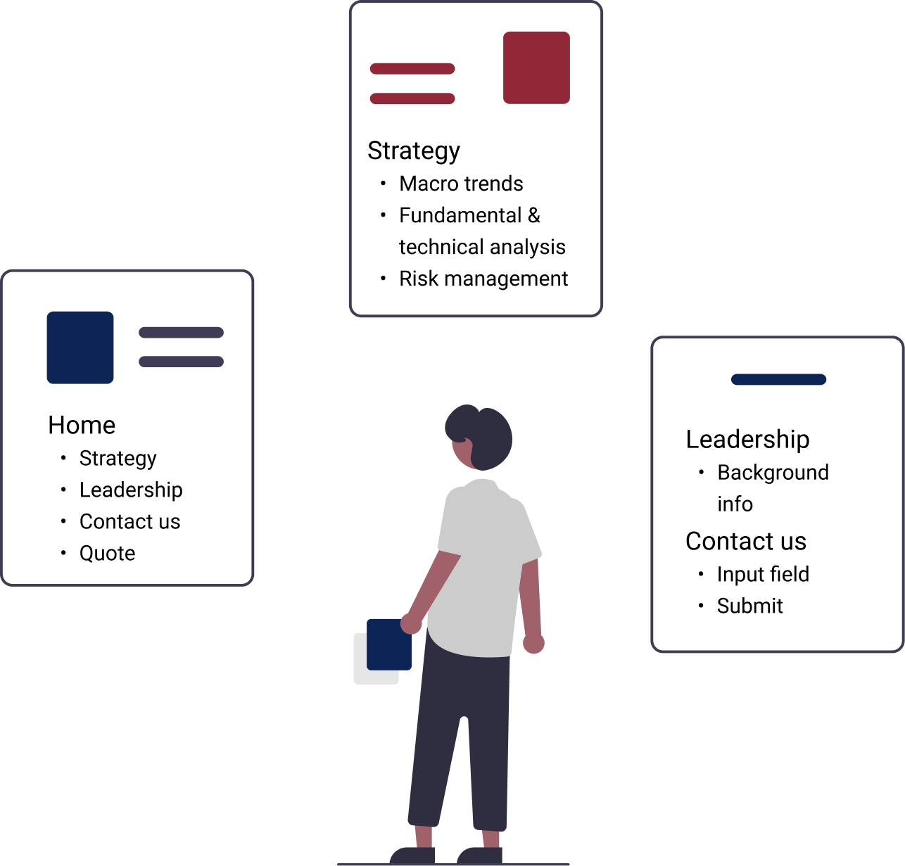
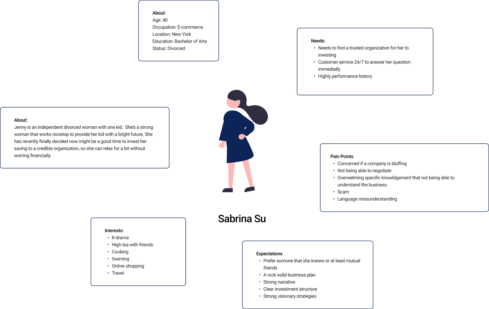
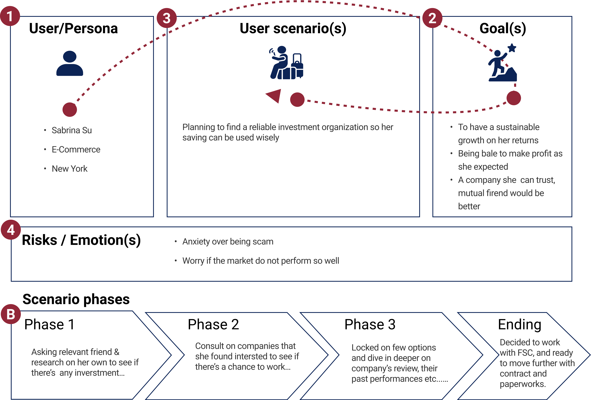
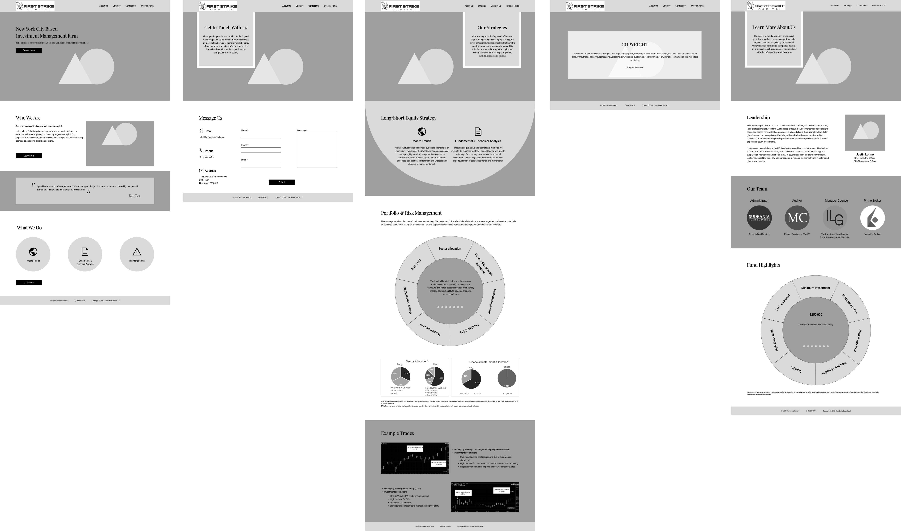

First Strike Capital
First Strike Capital is a New York City based investment management firm. Their primary objective is growth of investor capital by using a long/short equity strategy.

Problem:
One person's business could be overwhelming sometimes, there are a lot of tasks you need to take care of such as organizing, managing, marketing, etc... Business owner often forgets about the importance of how UI affects potential clients which might lead to decreasing web traffic, losing customers, and not being able to trust.
Solution:
Improve the digital presence and expand its reach by redesigning the website. Current problems of web UI are minimalist content and unprofessional overall feeling. To fix those problems, we develop the contents, and repetition of call to action to reach the page in multiple ways. We decided to use more illustrations to create a fun, easy atmosphere.
Role
- UX Researcher
- UI Designer
- Project Manager
Tools Used
- Adobe Illustrator
- Adobe photoshop
- Figma
- Google Drive
Site Analysis
This method is necessary, especially for a web redesign. We looked into the First Strike Capital’s original website and conducted this analysis to define contents and functionality improvements. This is an early stage for designing, and it is a crucial first step in creating a viable web design.

Site Annotation
We annotate this website by simply marking up where we think it needs changes and providing reasoning. It’s an early stage for the research stage by understanding the current website and the first impression of modifications.

Heuristic Evaluation
Our team conducted a survey within Heuristic questions based on web appearance/aesthetics, content, navigation and efficiency/functionality. Having my colleague whos also in this indutry to examine the interface and judge its compliance with recognized usability principles.

Feedbacks:
- Drop shadow on H1 looks weird cause it's the only one
- Icons are a little off
- Magnifying glass for risk management?
- Tag line a little basic?
- The only thing it says is based in NYC-Investor portal has a different feel from the rest of the site.
- Image on contact feels a bit inconsistent
- leadership icon is the same as logo?
- Not sure how i feel about hero cross dissolve transition/
- No footer?
- Can’t indentlify location on the site
- No error message
- Should have an error 404 page???
- Not compeling enough to pursuade users to join
- No clear mission of the company to understand who you are
- Overall flow looks unorganized and unprofessional
Competitor Analysis
What analyzed other websites relating to business investment topic to have a better understanding strategies and their market goals. We examined competitors' features, differentiators, strengths, weaknesses, and customer reviews by analyzing those competitors so we could improve our products and services.
User Persona
We targeted users and audiences on single mother based on the assumptions of stakeholders. It allows us to begin designing and building immediately without getting overly bogged down with the details of user behavior. We created a profile to understand their needs and challenges better the persona helped us which better solutions due to a deeper understanding of users' pain points, needs, goals, and general characteristics.

User Scenario
We further analyzed our persona, which describes realistic situations relevant to the design of a solution. By painting a "rich picture" of a set of events, we can appreciate user interactions in context, helping clients understand users' practical needs and behaviors.


User Insight Statement
A single mother with limited saving needs to invest her money wisely in order to make profits to support her kid, because of stress and pressure from life can lead to health risks for her and her child.


How Might We
How might we help a single woman that tries to make extra cash out of her saving without putting too much effort of work becuase she has a primary job that can’t be distrcted from. So she can create a better living enviroment for her kid.
Point of View Statement
First Strike Capital was designed to achieve growth of investor capital. We have observed that FSC’s web page has been lacking relevant information, unpleasing web interface & missing Chinese translation (majority of the investors are based in China), which is causing loss of potential investors and less web traffic.

Mind Map
With the help of the mind map, which shows the possible path the user takes with navigating our website, and what content the user will see on each page. This step is very beneficial for UI design. We depend a lot on this because it helps our team be on the same page and logically map out the websites overall look.

Mood Board
We use a mood board to organize this project's inspiration and refine a project's style before diving into the actual design process. Gives a visual presentation consisting of images, text, and samples of objects in a composition. Each of us on the team finds valuable resources to help keep the style and aesthetic of a project consistent.

Style Guide
Once we have our mood board done, we define our stylesheet to ensure that multiple contributors are creating a clear and cohesive way that reflects the corporate style and ensures brand consistency with everything from design to writing.

Wireframing

High Fidelity

Usability Testing
Four people completed our two task usability tests. The scenario based on our persona – a small business owner in the community – asked users to navigate the site while talking us through their thought process: